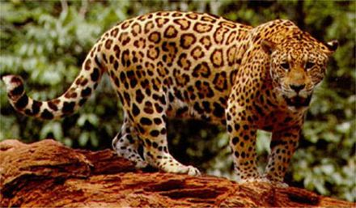

Jaguars can reach up to six feet in length -- from their nose to the tip of their tail -- and stand up to three feet tall at the shoulder. The average male jaguar weighs about 120 pounds, but some individuals can weigh as much as 300 pounds. At birth most jaguars weigh only two pounds. Jaguars are most famous for their beautiful spotted coats. The spots are broken rosettes, rather than true spots like a leopard. These allow the jaguar to hide amongst the grasses, bushes and trees that dominate its habitat.
